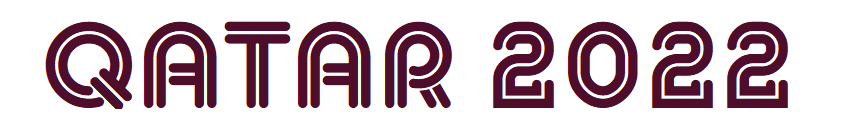
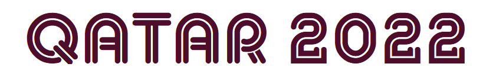

Top 6 Team on World FIFA Ranking!
Choose your country to learn more about their World Cup journey.
 

Choose your country to learn more about their World Cup journey.
Brazil is the most successful national team in the FIFA World Cup, being crowned winner five times: 1958, 1962, 1970, 1994 and 2002.
The South American giants went into the 2022 tournament as the top-ranked team in the world and many of the names on the list of manager Tite are household names playing for some of the biggest club teams in the world.
The Belgium national football team officially represents Belgium in men's international football since their maiden match in 1904.
The squad is under the global jurisdiction of FIFA and is governed in Europe by UEFA—both of which were co-founded by the Belgian team's supervising body, the Royal Belgian Football Association.
The Argentina national football team (Spanish: Selección de fútbol de Argentina) represents Argentina in men's international football and is administered by the Argentine Football Association, the governing body for football in Argentina.
La Selección (National Team), also known as La Albiceleste, has appeared in five World Cup finals, including the first final in 1930, which they lost 4–2 to Uruguay. Argentina won in their next final appearance in 1978, beating the Netherlands 3–1 at extra time.
The France national football team (French: Équipe de France de football) represents France in men's international football and is controlled by the French Football Federation (Fédération française de football), also known as FFF. The team's colours are blue, white, and red, and the coq gaulois its symbol. France are colloquially known as Les Bleus (The Blues). They are the reigning world champions, having won the most recent World Cup final in 2018.
France plays their home matches at the Stade de France in Saint-Denis, Île-de-France, and their manager is Didier Deschamps. They have won two FIFA World Cups, two UEFA European Championships, two FIFA Confederations Cups, one CONMEBOL–UEFA Cup of Champions and one UEFA Nations League title.
France plays their home matches at the Stade de France in Saint-Denis, Île-de-France, and their manager is Didier Deschamps. They have won two FIFA World Cups, two UEFA European Championships, two FIFA Confederations Cups, one CONMEBOL–UEFA Cup of Champions and one UEFA Nations League title.
England is the joint oldest national team in football having played in the world's first international football match in 1872, against Scotland. England's home ground is Wembley Stadium, London, and its training headquarters is St George's Park, Burton upon Trent. The team's manager is Gareth Southgate.
The Italy national football team (Italian: Nazionale di calcio dell'Italia) has represented Italy in international football since its first match in 1910. The national team is controlled by the Italian Football Federation (FIGC), the governing body for football in Italy, which is a co-founder and member of UEFA.
Italy is one of the most successful national teams in the history of football and the World Cup, having won four titles (1934, 1938, 1982, 2006) and appearing in two other finals (1970, 1994), reaching a third place (1990) and a fourth place (1978). Italy also won two European Championships (1968, 2020), and appeared in two other finals of the tournament (2000, 2012).
Brazil is the most successful national team in the FIFA World Cup, being crowned winner five times: 1958, 1962, 1970, 1994 and 2002.
The South American giants went into the 2022 tournament as the top-ranked team in the world and many of the names on the list of manager Tite are household names playing for some of the biggest club teams in the world.